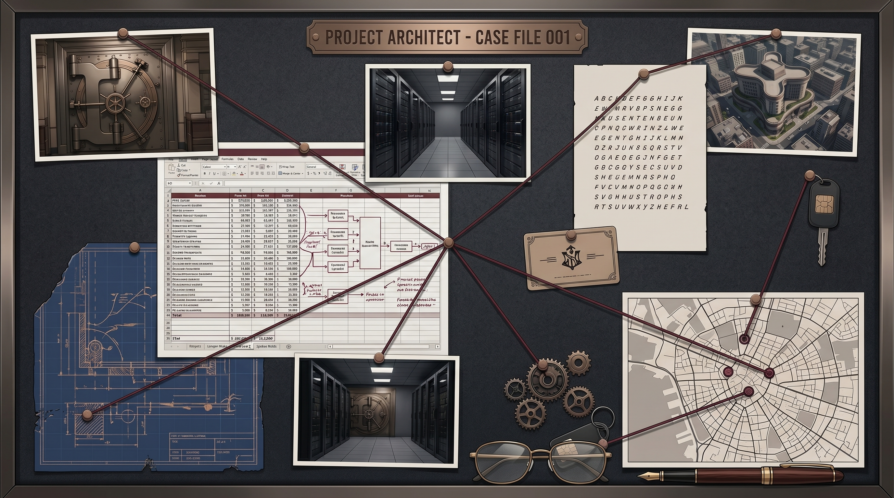

FALSE NOTE
The Silent Witness //
Peringatan: Game ini adalah karya fiksi . Nama, karakter, tempat, dan peristiwa adalah imajinasi penulis.
© 2026 FALSE NOTE. All Rights Reserved.
Authorized Access Only.
Raka
PAUSED